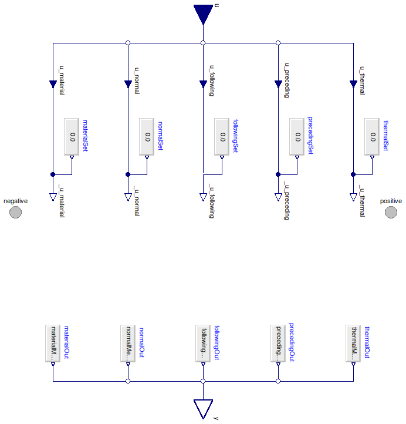

Table of Contents
- User's Guide
- Blocks
- Conditions
- Assemblies
- Regions
- Subregions
- Phases
- Species
- Connectors
- Characteristics
- Units
- Quantities
- Utilities
- Icons
Download
- Latest version (**Empty; please check back soon or contact kdavies4 at gmail.com.)
FCSys.Conditions.ByConnector.Face.Pair
Conditions for a pair of Face connectorsInformation
Extends from Modelica.Icons.Package (Icon for standard packages).Package Content
| Name | Description |
|---|---|
| Conditions for a Face connector, with flows specified by default | |
| Conditions for a pair of Face connectors, with difference in efforts specified by default | |
| Material conditions | |
| Translational conditions | |
| Thermal conditions |
 FCSys.Conditions.ByConnector.Face.Pair.FaceFlows
FCSys.Conditions.ByConnector.Face.Pair.FaceFlows
Conditions for a Face connector, with flows specified by default
Information
Extends from FCSys.Icons.Conditions.PairShort (Short icon for a two-connector boundary condition).
Parameters
| Type | Name | Default | Description |
|---|---|---|---|
| Specification | |||
| Material | |||
| Boolean | internalMaterial | true | Use internal specification |
| RealExpression | materialSet | redeclare Sources.RealExpres… | Source of internal specification |
| Normal translational | |||
| Boolean | internalNormal | true | Use internal specification |
| RealExpression | normalSet | redeclare Sources.RealExpres… | Source of internal specification |
| First transverse | |||
| Boolean | internalFollowing | true | Use internal specification |
| RealExpression | followingSet | redeclare Sources.RealExpres… | Source of internal specification |
| Second transverse | |||
| Boolean | internalPreceding | true | Use internal specification |
| RealExpression | precedingSet | redeclare Sources.RealExpres… | Source of internal specification |
| Thermal | |||
| Boolean | internalThermal | true | Use internal specification |
| RealExpression | thermalSet | redeclare Sources.RealExpres… | Source of internal specification |
Connectors
| Type | Name | Description |
|---|---|---|
| Face | negative | Negative face |
| Face | positive | Positive face |
| RealInputBus | u | Bus of specifications |
| RealOutputBus | y | Bus of measurements |
Modelica definition
model FaceFlows "Conditions for a Face connector, with flows specified by default" import Modelica.Blocks.Sources; extends FCSys.Icons.Conditions.PairShort; // Specification // ------------- // Material replaceable function materialSpec = Material.current constrainedby Material.PartialCondition "Quantity"; parameter Boolean internalMaterial=true "Use internal specification"; replaceable Sources.RealExpression materialSet if internalMaterial constrainedby Modelica.Blocks.Interfaces.SO "Source of internal specification"; // // Normal translational replaceable function normalSpec = Translational.force constrainedby Conditions.ByConnector.Face.Pair.Translational.PartialCondition "Quantity"; parameter Boolean internalNormal=true "Use internal specification"; replaceable Sources.RealExpression normalSet if internalNormal constrainedby Modelica.Blocks.Interfaces.SO "Source of internal specification"; // // 1st transverse replaceable function followingSpec = Translational.force constrainedby Conditions.ByConnector.Face.Pair.Translational.PartialCondition "Quantity"; parameter Boolean internalFollowing=true "Use internal specification"; replaceable Sources.RealExpression followingSet if internalFollowing constrainedby Modelica.Blocks.Interfaces.SO "Source of internal specification"; // // 2nd transverse replaceable function precedingSpec = Translational.force constrainedby Conditions.ByConnector.Face.Pair.Translational.PartialCondition "Quantity"; parameter Boolean internalPreceding=true "Use internal specification"; replaceable Sources.RealExpression precedingSet if internalPreceding constrainedby Modelica.Blocks.Interfaces.SO "Source of internal specification"; // // Thermal replaceable function thermalSpec = Thermal.heatRate constrainedby Conditions.ByConnector.Face.Pair.Thermal.PartialCondition "Quantity"; parameter Boolean internalThermal=true "Use internal specification"; replaceable Sources.RealExpression thermalSet if internalThermal constrainedby Modelica.Blocks.Interfaces.SO "Source of internal specification"; // Measurement // ----------- // Material replaceable function materialMeas = Material.density constrainedby Conditions.ByConnector.Face.Pair.Material.PartialCondition "Material quantity"; // Normal translational replaceable function normalMeas = Translational.velocity constrainedby Conditions.ByConnector.Face.Pair.Translational.PartialCondition "Normal translational quantity"; // 1st transverse replaceable function followingMeas = Translational.velocity constrainedby Conditions.ByConnector.Face.Pair.Translational.PartialCondition "First transverse quantity"; // 2nd transverse replaceable function precedingMeas = Translational.velocity constrainedby Conditions.ByConnector.Face.Pair.Translational.PartialCondition "Second transverse quantity"; // Thermal replaceable function thermalMeas = Thermal.temperature constrainedby Conditions.ByConnector.Face.Pair.Thermal.PartialCondition "Thermal quantity"; // Aliases Q.Density Deltarho "Difference in density"; Q.Velocity Deltaphi[Orient] "Difference in velocity"; Q.Temperature DeltaT "Difference in temperature"; Connectors.Face negative "Negative face"; Connectors.Face positive "Positive face"; Connectors.RealInputBus u if not (internalMaterial and internalNormal and internalFollowing and internalPreceding and internalThermal) "Bus of specifications"; Connectors.RealOutputBus y "Bus of measurements"; // Inputs protected Connectors.RealInputInternal u_material if not internalMaterial "Material specification"; Connectors.RealInputInternal u_normal if not internalNormal "Normal translational specification"; Connectors.RealInputInternal u_following if not internalFollowing "First transverse specification"; Connectors.RealInputInternal u_preceding if not internalPreceding "Second transverse specification"; Connectors.RealInputInternal u_thermal if not internalThermal "Thermal specification"; // Outputs Connectors.RealOutputInternal _u_material=materialSpec( Deltarho, negative.Ndot, Deltaphi, negative.mPhidot, DeltaT, negative.Qdot) "Internal, working value of material specification"; Connectors.RealOutputInternal _u_normal=normalSpec( Deltarho, negative.Ndot, Deltaphi, negative.mPhidot, DeltaT, negative.Qdot, orient=Orient.normal) "Internal, working value of normal translational specification"; Connectors.RealOutputInternal _u_following=followingSpec( Deltarho, negative.Ndot, Deltaphi, negative.mPhidot, DeltaT, negative.Qdot, orient=Orient.after) "Internal, working value of first transverse specification"; Connectors.RealOutputInternal _u_preceding=precedingSpec( Deltarho, negative.Ndot, Deltaphi, negative.mPhidot, DeltaT, negative.Qdot, orient=Orient.before) "Internal, working value of second transverse specification"; Connectors.RealOutputInternal _u_thermal=thermalSpec( Deltarho, negative.Ndot, Deltaphi, negative.mPhidot, DeltaT, negative.Qdot) "Internal, working value of thermal specification"; Sources.RealExpression materialOut(y=materialMeas( Deltarho, negative.Ndot, Deltaphi, negative.mPhidot, DeltaT, negative.Qdot)) "Generate the material output"; Sources.RealExpression normalOut(y=normalMeas( Deltarho, negative.Ndot, Deltaphi, negative.mPhidot, DeltaT, negative.Qdot, orient=Orient.normal)) "Generate the normal output"; Sources.RealExpression precedingOut(y=precedingMeas( Deltarho, negative.Ndot, Deltaphi, negative.mPhidot, DeltaT, negative.Qdot, orient=Orient.before)) "Generate the 2nd transverse output"; Sources.RealExpression followingOut(y=followingMeas( Deltarho, negative.Ndot, Deltaphi, negative.mPhidot, DeltaT, negative.Qdot, orient=Orient.after)) "Generate the 1st transverse output"; Sources.RealExpression thermalOut(y=thermalMeas( Deltarho, negative.Ndot, Deltaphi, negative.mPhidot, DeltaT, negative.Qdot)) "Generate the thermal output"; equation // Differences in efforts Deltarho = positive.rho - negative.rho; Deltaphi = positive.phi - negative.phi; DeltaT = positive.T - negative.T; // Conservation (without storage) 0 = positive.Ndot + negative.Ndot "Material"; zeros(3) = positive.mPhidot + negative.mPhidot "Translational momentum"; DeltaT = positive.Qdot + negative.Qdot "Energy"; // Material connect(u_material, _u_material); connect(materialSet.y, _u_material); // Normal translational connect(u_normal, _u_normal); connect(normalSet.y, _u_normal); // First transverse connect(u_following, _u_following); connect(followingSet.y, _u_following); // Second transverse connect(u_preceding, _u_preceding); connect(precedingSet.y, _u_preceding); // Thermal connect(u_thermal, _u_thermal); connect(thermalSet.y, _u_thermal); connect(materialOut.y, y.material); connect(normalOut.y, y.normal); connect(followingOut.y, y.following); connect(precedingOut.y, y.preceding); connect(u_material, u.material); connect(u_normal, u.normal); connect(u_following, u.following); connect(u_preceding, u.preceding); connect(u_thermal, u.thermal); connect(thermalOut.y, y.thermal); end FaceFlows;
FCSys.Conditions.ByConnector.Face.Pair.FaceEfforts
Conditions for a pair of Face connectors, with difference in efforts specified by default
Information
Extends from FaceFlows (Conditions for a Face connector, with flows specified by default).
Parameters
| Type | Name | Default | Description |
|---|---|---|---|
| Specification | |||
| Material | |||
| replaceable function materialSpec | Conditions.ByConnector.Face…. | Quantity | |
| Boolean | internalMaterial | true | Use internal specification |
| RealExpression | materialSet | redeclare Sources.RealExpres… | Source of internal specification |
| Normal translational | |||
| replaceable function normalSpec | Conditions.ByConnector.Face…. | Quantity | |
| Boolean | internalNormal | true | Use internal specification |
| RealExpression | normalSet | redeclare Sources.RealExpres… | Source of internal specification |
| First transverse | |||
| replaceable function followingSpec | Conditions.ByConnector.Face…. | Quantity | |
| Boolean | internalFollowing | true | Use internal specification |
| RealExpression | followingSet | redeclare Sources.RealExpres… | Source of internal specification |
| Second transverse | |||
| replaceable function precedingSpec | Conditions.ByConnector.Face…. | Quantity | |
| Boolean | internalPreceding | true | Use internal specification |
| RealExpression | precedingSet | redeclare Sources.RealExpres… | Source of internal specification |
| Thermal | |||
| replaceable function thermalSpec | Conditions.ByConnector.Face…. | Quantity | |
| Boolean | internalThermal | true | Use internal specification |
| RealExpression | thermalSet | redeclare Sources.RealExpres… | Source of internal specification |
| Measurement | |||
| replaceable function materialMeas | Conditions.ByConnector.Face…. | Material quantity | |
| replaceable function normalMeas | Conditions.ByConnector.Face…. | Normal translational quantity | |
| replaceable function followingMeas | Conditions.ByConnector.Face…. | First transverse quantity | |
| replaceable function precedingMeas | Conditions.ByConnector.Face…. | Second transverse quantity | |
| replaceable function thermalMeas | Conditions.ByConnector.Face…. | Thermal quantity | |
Connectors
| Type | Name | Description |
|---|---|---|
| Face | negative | Negative face |
| Face | positive | Positive face |
| RealInputBus | u | Bus of specifications |
| RealOutputBus | y | Bus of measurements |
| Specification | ||
| Material | ||
| replaceable function materialSpec | Quantity | |
| Normal translational | ||
| replaceable function normalSpec | Quantity | |
| First transverse | ||
| replaceable function followingSpec | Quantity | |
| Second transverse | ||
| replaceable function precedingSpec | Quantity | |
| Thermal | ||
| replaceable function thermalSpec | Quantity | |
| Measurement | ||
| replaceable function materialMeas | Material quantity | |
| replaceable function normalMeas | Normal translational quantity | |
| replaceable function followingMeas | First transverse quantity | |
| replaceable function precedingMeas | Second transverse quantity | |
| replaceable function thermalMeas | Thermal quantity | |
Modelica definition
model FaceEfforts "Conditions for a pair of Face connectors, with difference in efforts specified by default" extends FaceFlows( redeclare replaceable function materialSpec = Conditions.ByConnector.Face.Pair.Material.density, redeclare replaceable function normalSpec = Conditions.ByConnector.Face.Pair.Translational.velocity, redeclare replaceable function followingSpec = Conditions.ByConnector.Face.Pair.Translational.velocity, redeclare replaceable function precedingSpec = Conditions.ByConnector.Face.Pair.Translational.velocity, redeclare replaceable function thermalSpec = Conditions.ByConnector.Face.Pair.Thermal.temperature, redeclare replaceable function materialMeas = Conditions.ByConnector.Face.Pair.Material.current, redeclare replaceable function normalMeas = Conditions.ByConnector.Face.Pair.Translational.force, redeclare replaceable function followingMeas = Conditions.ByConnector.Face.Pair.Translational.force, redeclare replaceable function precedingMeas = Conditions.ByConnector.Face.Pair.Translational.force, redeclare replaceable function thermalMeas = Conditions.ByConnector.Face.Pair.Thermal.heatRate); // See note in ElectrochemEfforts. end FaceEfforts;